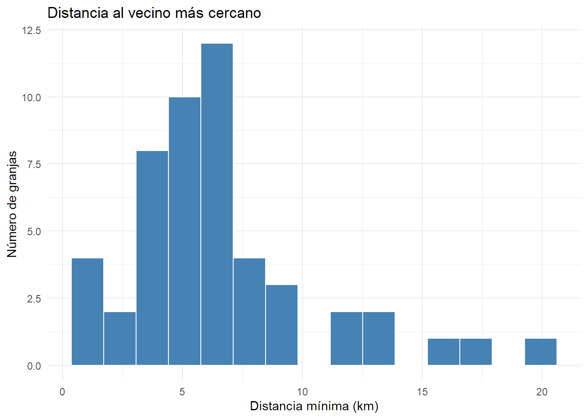
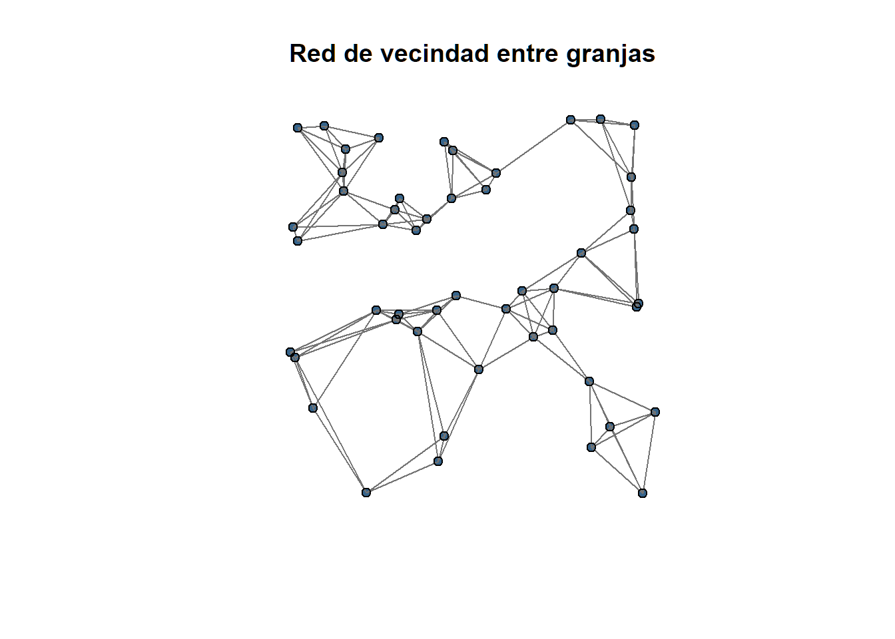
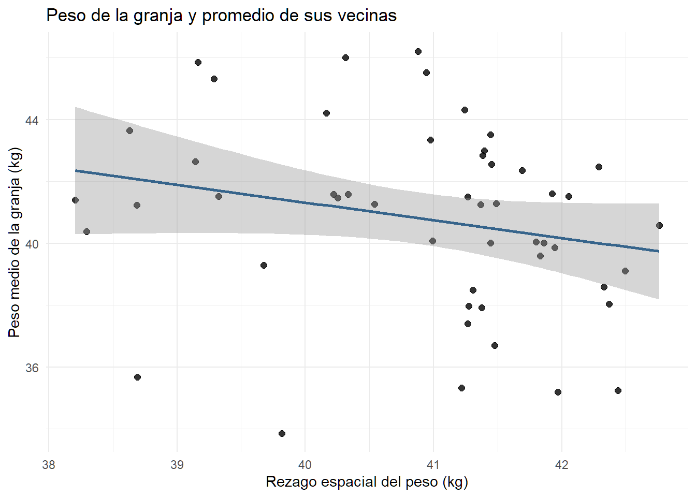
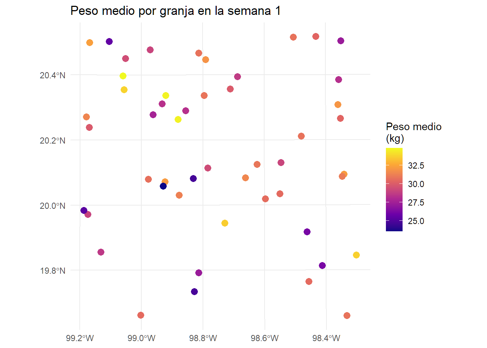
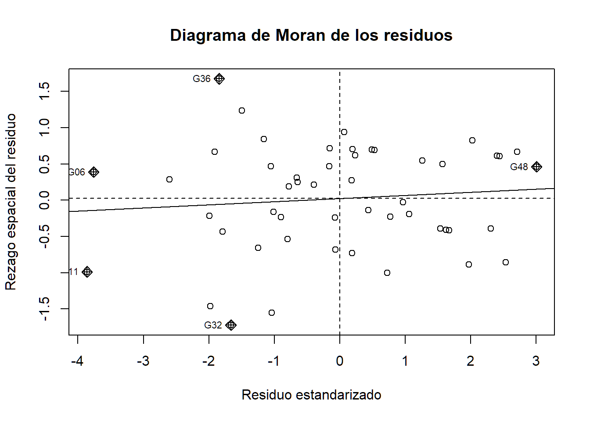
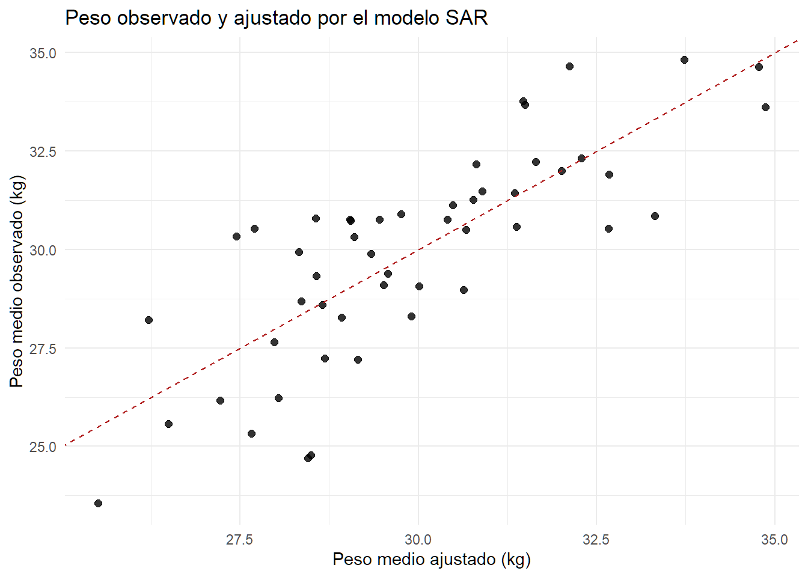
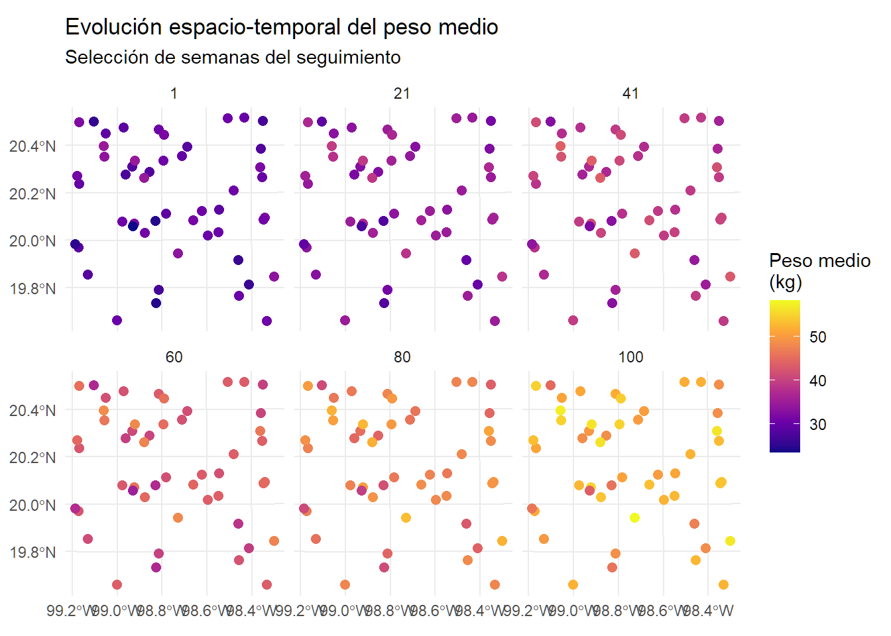

7Dependencia espacial y modelos SAR espacio-temporales
En estos dos bloques incorporaremos la dimensión espacial al análisis de las granjas. Primero utilizaremos sus coordenadas para calcular distancias, definir relaciones de vecindad y construir una matriz espacial estandarizada por filas. Después agregaremos las mediciones por granja y semana y ajustaremos un modelo autorregresivo espacial, SAR, para una semana concreta.
El propósito es distinguir dos fuentes diferentes de dependencia. Un efecto aleatorio de granja representa heterogeneidad no observada entre explotaciones, mientras que un modelo espacial explícito representa la posibilidad de que el resultado de una granja esté relacionado con los resultados de explotaciones próximas.
Las coordenadas y los datos son simulados. Los resultados tienen fines didácticos y no deben interpretarse como evidencia sobre granjas reales de México.
Código
# Instalar los paquetes si es necesario.# install.packages(c(# "sf", "spdep", "spatialreg", "tidyverse",# "readxl", "Matrix"# ))library(tidyverse)library(readxl)library(sf)library(spdep)library(spatialreg)library(Matrix)# Nombre del archivo Excel.archivo <-"../datos/base_borregos_espaciotemporal_Hidalgo.xlsx"# Consultar las hojas disponibles.excel_sheets(archivo)
7.1 Bloque 6. Dependencia espacial y matriz de vecindad
7.2 Coordenadas de las granjas
Cada granja debe estar representada por una sola ubicación. Si el objeto granjas fue importado en el bloque cartográfico anterior, podemos reutilizarlo. Para que este bloque también pueda ejecutarse de forma independiente, construiremos una tabla con una fila por granja a partir de datos_b2.
Código
granjas_b6 <- datos_b2 |>select( granja_id, longitud, latitud, zona, tamano_granja, sistema_produccion ) |>distinct() |>mutate(granja_id =as.factor(granja_id) )# Número de filas y granjas únicas.granjas_b6 |>summarise(n_filas =n(),n_granjas =n_distinct(granja_id) )
Si el número de filas es mayor que el número de granjas, alguna explotación presenta más de una combinación de coordenadas o características. Antes de continuar debemos revisar esas inconsistencias.
El siguiente análisis requiere coordenadas completas. Eliminaremos provisionalmente las granjas sin localización, pero en un estudio real tendríamos que investigar por qué faltan y valorar las consecuencias de excluirlas.
Las coordenadas están expresadas en longitud y latitud. Las convertiremos en un objeto sf con el sistema geográfico WGS 84, identificado mediante EPSG 4326.
Simple feature collection with 50 features and 6 fields
Geometry type: POINT
Dimension: XY
Bounding box: xmin: -99.18738 ymin: 19.65949 xmax: -98.30174 ymax: 20.5175
Geodetic CRS: WGS 84
# A tibble: 50 × 7
granja_id longitud latitud zona tamano_granja sistema_produccion
* <fct> <dbl> <dbl> <chr> <chr> <fct>
1 G01 -98.3 19.7 Sur Grande Extensivo
2 G02 -99.1 20.4 Norte Mediana Semi-intensivo
3 G03 -98.5 19.9 Sur Mediana Extensivo
4 G04 -99.0 20.1 Centro Mediana Semi-intensivo
5 G05 -98.9 20.1 Centro Mediana Semi-intensivo
6 G06 -98.8 20.1 Centro Mediana Semi-intensivo
7 G07 -99.1 20.4 Norte Pequena Semi-intensivo
8 G08 -98.9 20.3 Norte Grande Semi-intensivo
9 G09 -98.3 20.5 Norte Pequena Extensivo
10 G10 -98.6 20.0 Centro Pequena Extensivo
# ℹ 40 more rows
# ℹ 1 more variable: geometry <POINT [°]>
La longitud y la latitud se expresan en grados. Aunque podemos representar los puntos directamente, los grados no constituyen una unidad de distancia constante. Para calcular distancias en metros, transformaremos las coordenadas a un sistema proyectado.
En este ejemplo utilizaremos WGS 84 / UTM zona 14N, EPSG 32614, apropiado para una parte importante del centro-oriente de México. En una aplicación real debe comprobarse que la proyección elegida sea adecuada para toda la extensión del estudio.
Coordinate Reference System:
User input: EPSG:32614
wkt:
PROJCRS["WGS 84 / UTM zone 14N",
BASEGEOGCRS["WGS 84",
ENSEMBLE["World Geodetic System 1984 ensemble",
MEMBER["World Geodetic System 1984 (Transit)"],
MEMBER["World Geodetic System 1984 (G730)"],
MEMBER["World Geodetic System 1984 (G873)"],
MEMBER["World Geodetic System 1984 (G1150)"],
MEMBER["World Geodetic System 1984 (G1674)"],
MEMBER["World Geodetic System 1984 (G1762)"],
MEMBER["World Geodetic System 1984 (G2139)"],
MEMBER["World Geodetic System 1984 (G2296)"],
ELLIPSOID["WGS 84",6378137,298.257223563,
LENGTHUNIT["metre",1]],
ENSEMBLEACCURACY[2.0]],
PRIMEM["Greenwich",0,
ANGLEUNIT["degree",0.0174532925199433]],
ID["EPSG",4326]],
CONVERSION["UTM zone 14N",
METHOD["Transverse Mercator",
ID["EPSG",9807]],
PARAMETER["Latitude of natural origin",0,
ANGLEUNIT["degree",0.0174532925199433],
ID["EPSG",8801]],
PARAMETER["Longitude of natural origin",-99,
ANGLEUNIT["degree",0.0174532925199433],
ID["EPSG",8802]],
PARAMETER["Scale factor at natural origin",0.9996,
SCALEUNIT["unity",1],
ID["EPSG",8805]],
PARAMETER["False easting",500000,
LENGTHUNIT["metre",1],
ID["EPSG",8806]],
PARAMETER["False northing",0,
LENGTHUNIT["metre",1],
ID["EPSG",8807]]],
CS[Cartesian,2],
AXIS["(E)",east,
ORDER[1],
LENGTHUNIT["metre",1]],
AXIS["(N)",north,
ORDER[2],
LENGTHUNIT["metre",1]],
USAGE[
SCOPE["Navigation and medium accuracy spatial referencing."],
AREA["Between 102°W and 96°W, northern hemisphere between equator and 84°N, onshore and offshore. Canada - Manitoba; Nunavut; Saskatchewan. Mexico. United States (USA)."],
BBOX[0,-102,84,-96]],
ID["EPSG",32614]]
7.4 Distancias entre granjas
La función st_distance() calcula una matriz con las distancias entre todas las parejas de granjas. Como el objeto está proyectado, las distancias se expresan en metros.
Código
distancias_m <-st_distance(granjas_utm_b6)# Convertir las unidades espaciales a una matriz numérica en kilómetros.distancias_km <- units::drop_units(distancias_m) /1000# Mostrar una parte de la matriz.round(distancias_km[1:min(6, nrow(distancias_km)),1:min(6, ncol(distancias_km))], 2)
La diagonal de la matriz contiene ceros porque representa la distancia de cada granja respecto a sí misma. La matriz es simétrica: la distancia de la granja A a la granja B es igual a la distancia de B a A.
Podemos resumir la distancia mínima de cada explotación a otra granja.
Min. 1st Qu. Median Mean 3rd Qu. Max.
1.050 3.984 6.023 6.505 7.713 19.951
Código
ggplot( resumen_distancias,aes(x = distancia_minima_km)) +geom_histogram(bins =15,fill ="steelblue",color ="white" ) +labs(title ="Distancia al vecino más cercano",x ="Distancia mínima (km)",y ="Número de granjas" ) +theme_minimal()

Esta distribución ayuda a seleccionar una regla de vecindad razonable. Una distancia umbral demasiado pequeña puede dejar granjas sin vecinos. Un umbral demasiado grande puede conectar explotaciones muy alejadas y producir una red excesivamente densa.
7.5 Definición de vecinos por proximidad
Existen diferentes formas de definir qué granjas son vecinas:
Una distancia máxima: dos granjas son vecinas si se encuentran a menos de un umbral.
Los vecinos más cercanos: cada granja se conecta con las k explotaciones más próximas.
Una estructura administrativa o productiva definida mediante conocimiento del sistema.
Una red basada en movimientos, rutas, comercio o contacto epidemiológico.
Como las granjas son puntos y no polígonos contiguos, utilizaremos los cuatro vecinos más cercanos. Esta regla garantiza que cada granja tenga inicialmente el mismo número de conexiones salientes.
Código
# Extraer las coordenadas proyectadas.coords_utm <-st_coordinates(granjas_utm_b6)# Definir cuatro vecinos más cercanos.k_vecinos <-min(4, nrow(granjas_utm_b6) -1)vecinos_knn <-knearneigh( coords_utm,k = k_vecinos)lista_vecinos_dirigida <-knn2nb(vecinos_knn)lista_vecinos_dirigida
Neighbour list object:
Number of regions: 50
Number of nonzero links: 200
Percentage nonzero weights: 8
Average number of links: 4
Non-symmetric neighbours list
La relación de vecinos más cercanos puede ser dirigida. La granja A puede seleccionar a B entre sus cuatro vecinos más próximos, aunque B no seleccione a A. Para construir una relación simétrica, aplicaremos make.sym.nb().
Código
lista_vecinos <-make.sym.nb( lista_vecinos_dirigida)# Número de vecinos de cada granja.numero_vecinos <-card(lista_vecinos)summary(numero_vecinos)
Min. 1st Qu. Median Mean 3rd Qu. Max.
4.00 4.00 5.00 4.96 6.00 8.00
Después de la simetrización, algunas granjas pueden tener más de cuatro vecinos porque reciben conexiones adicionales. Ninguna debería quedar aislada si existe un número suficiente de puntos y las coordenadas no están duplicadas.
Código
table(numero_vecinos)
numero_vecinos
4 5 6 7 8
24 12 8 4 2
Código
which(numero_vecinos ==0)
integer(0)
7.6 Comprobación de coordenadas duplicadas
Dos granjas con exactamente las mismas coordenadas tienen distancia cero, aunque representen unidades distintas. Esta situación puede ser real, pero también puede indicar un error o que las coordenadas se registraron con poca precisión.
Código
coordenadas_duplicadas <- granjas_b6 |>count(longitud, latitud, name ="n_granjas") |>filter(n_granjas >1)coordenadas_duplicadas
# A tibble: 0 × 3
# ℹ 3 variables: longitud <dbl>, latitud <dbl>, n_granjas <int>
Si aparecen coordenadas duplicadas, debemos revisar las granjas afectadas antes de interpretar las relaciones espaciales. Los algoritmos de vecinos más cercanos pueden producir advertencias cuando existen puntos idénticos.
7.7 Visualización de la red de vecindad
Representaremos las granjas y las conexiones definidas por la lista de vecinos. La función plot.nb() utiliza las coordenadas en el mismo orden con el que se construyó la lista.
Código
plot(st_geometry(granjas_utm_b6),pch =19,col ="steelblue4",main ="Red de vecindad entre granjas")plot( lista_vecinos, coords_utm,add =TRUE,col ="grey45",lwd =1)

También podemos construir un objeto de segmentos para representar la red mediante ggplot2.
La red representa la definición matemática de proximidad que utilizaremos en el análisis. No demuestra que existan intercambios, contagios o relaciones productivas reales entre dos explotaciones.
7.8 Construcción de la matriz binaria de vecindad
Una matriz de vecindad binaria (B) contiene un 1 cuando dos granjas se consideran vecinas y un 0 cuando no lo son. La diagonal se mantiene en cero porque una granja no se considera vecina de sí misma.
Código
B <-nb2mat( lista_vecinos,style ="B",zero.policy =TRUE)rownames(B) <-as.character(granjas_utm_b6$granja_id)colnames(B) <-as.character(granjas_utm_b6$granja_id)# Mostrar una parte de la matriz binaria.B[1:min(8, nrow(B)), 1:min(8, ncol(B))]
# Comprobar la diagonal y la simetría.all(diag(B) ==0)
[1] TRUE
Código
all(B ==t(B))
[1] TRUE
Como hemos simetrizado la lista, la matriz binaria debe ser simétrica. Si B[i, j] = 1, también debe cumplirse B[j, i] = 1.
7.9 Matriz W y estandarización por filas
La matriz espacial (W) se obtiene estandarizando por filas la matriz binaria. Cada elemento se define como:
[ w_{ij} = {j b*{ij}} ]
Cada vecino recibe un peso igual a la inversa del número de vecinos de la granja. Por tanto, la suma de cada fila es igual a 1, salvo en unidades aisladas.
Código
W <-nb2mat( lista_vecinos,style ="W",zero.policy =TRUE)rownames(W) <-as.character(granjas_utm_b6$granja_id)colnames(W) <-as.character(granjas_utm_b6$granja_id)# Mostrar una parte de la matriz estandarizada.round( W[1:min(8, nrow(W)), 1:min(8, ncol(W))],3)
En ausencia de granjas aisladas, las sumas deberían ser iguales o muy próximas a 1. La estandarización por filas facilita interpretar el producto (Wy) como un promedio ponderado de los valores observados en las granjas vecinas.
La estandarización modifica la simetría numérica de la matriz cuando las granjas tienen diferente número de vecinos. La relación de vecindad continúa siendo simétrica, pero los pesos pueden diferir en las dos direcciones.
Código
all.equal(W, t(W))
[1] "Mean relative difference: 0.3356663"
7.10 Objeto listw para los modelos espaciales
Las funciones de spdep y spatialreg suelen utilizar un objeto listw, que almacena la lista de vecinos y sus pesos.
Characteristics of weights list object:
Neighbour list object:
Number of regions: 50
Number of nonzero links: 248
Percentage nonzero weights: 9.92
Average number of links: 4.96
Weights style: W
Weights constants summary:
n nn S0 S1 S2
W 50 2500 50 20.64512 203.1656
Es fundamental conservar el mismo orden de las granjas en la tabla, la geometría y el objeto de pesos. Una matriz espacial correctamente calculada pero aplicada a un orden diferente produce asociaciones erróneas.
El rezago espacial de una variable es el promedio ponderado de sus valores en las granjas vecinas. Para ilustrarlo, calcularemos el peso medio general de cada granja y su rezago espacial.
Código
peso_medio_granja_b6 <- datos_b2 |>group_by(granja_id) |>summarise(peso_medio_kg =mean(peso_kg, na.rm =TRUE),.groups ="drop" ) |>mutate(granja_id =as.factor(granja_id) )peso_espacial_b6 <- granjas_utm_b6 |>left_join( peso_medio_granja_b6,by ="granja_id" )# Confirmar que no falta el resultado en ninguna granja.sum(is.na(peso_espacial_b6$peso_medio_kg))
El rezago no es el peso de una granja concreta. Es un resumen del peso medio de sus vecinos según los pesos definidos en (W). Un valor alto indica que la explotación está rodeada por granjas que, en promedio, presentan valores altos.
Código
ggplot(st_drop_geometry(peso_espacial_b6),aes(x = rezago_peso, y = peso_medio_kg)) +geom_point(size =2, alpha =0.8) +geom_smooth(method ="lm",formula = y ~ x,se =TRUE,color ="steelblue4" ) +labs(title ="Peso de la granja y promedio de sus vecinas",x ="Rezago espacial del peso (kg)",y ="Peso medio de la granja (kg)" ) +theme_minimal()

Este gráfico es exploratorio. Una asociación positiva puede reflejar dependencia espacial, variables ambientales compartidas o una distribución espacial de características como la raza, el sistema productivo y la edad de los animales.
7.12 Efecto aleatorio de granja y dependencia espacial explícita
Un efecto aleatorio de granja y una estructura espacial no representan lo mismo.
Un intercepto aleatorio de granja:
Permite que cada explotación tenga un nivel promedio diferente.
Supone que las desviaciones de las granjas proceden de una distribución común.
No utiliza las coordenadas.
No establece que dos granjas cercanas deban parecerse más que dos granjas alejadas.
Una dependencia espacial explícita:
Utiliza una matriz de vecindad o de pesos.
Relaciona el resultado de una granja con los resultados o errores de sus vecinas.
Permite cuantificar la intensidad de la asociación espacial.
Depende de cómo se haya definido la proximidad geográfica o funcional.
Ambas estructuras pueden estar presentes simultáneamente. Una granja puede tener características propias persistentes y, además, encontrarse relacionada con explotaciones cercanas. Sin embargo, combinar efectos aleatorios, dependencia espacial y dependencia temporal requiere modelos más avanzados y una identificación cuidadosa de cada fuente de variabilidad.
7.13 Actividad de interpretación del Bloque 6
¿Las coordenadas son constantes dentro de cada granja?
¿Por qué transformamos las coordenadas antes de calcular distancias?
¿Cuál es la distancia mediana al vecino más cercano?
¿Qué criterio se utilizó para definir vecinos?
¿La relación de vecinos más cercanos era inicialmente simétrica?
¿Cuántos vecinos tiene cada granja después de simetrizar la red?
¿Existen granjas sin vecinos o coordenadas duplicadas?
¿Qué representan los ceros y unos de la matriz binaria?
¿Por qué la suma de cada fila de (W) es igual a 1?
¿Qué representa el rezago espacial del peso?
¿Por qué debe mantenerse el mismo orden en los datos y en (W)?
¿En qué se diferencia un efecto aleatorio de granja de una dependencia espacial explícita?
7.14 Bloque 7. Introducción al SAR espacio-temporal
7.15 Agregación de los datos por granja y semana
Los datos originales contienen varias observaciones por granja y semana porque se mide a distintos animales. Un modelo SAR transversal requiere una observación por unidad espacial. Para ajustar un modelo en una semana concreta, agregaremos primero las mediciones por granja y semana.
Calcularemos el peso medio, el consumo medio y algunas características de composición. El resultado será un panel en el que cada fila representa una combinación de granja y semana.
Cuando todos los valores de una variable son ausentes dentro de un grupo, mean(..., na.rm = TRUE) puede devolver NaN. Los convertiremos en NA antes del análisis.
Un panel equilibrado contiene todas las granjas en todas las semanas. Un panel desequilibrado presenta combinaciones ausentes. Los modelos espaciales y espacio-temporales difieren en su capacidad para trabajar con paneles incompletos, por lo que esta revisión debe realizarse antes de seleccionar el método.
Código
mediciones_panel <- panel_granja_semana |>count(granja_id, name ="n_semanas")summary(mediciones_panel$n_semanas)
Min. 1st Qu. Median Mean 3rd Qu. Max.
100 100 100 100 100 100
7.16 Selección de una semana para el modelo SAR
Seleccionaremos una semana con el mayor número de granjas disponibles. Si varias semanas tienen el mismo número, utilizaremos la primera.
Un modelo SAR y su matriz de pesos deben referirse exactamente al mismo conjunto de granjas. Si faltan valores, no basta con eliminarlos de la tabla: también debemos crear una lista de vecinos correspondiente al subconjunto utilizado.
Crearemos el subconjunto espacial y una lista de vecinos adaptada. subset() conserva únicamente las granjas utilizadas por el modelo.
Código
datos_semana_completos <- datos_semana_sar[ completos_sar,]lista_vecinos_semana <-subset( lista_vecinos,subset = completos_sar)listw_semana <-nb2listw( lista_vecinos_semana,style ="W",zero.policy =TRUE)# Comprobar el número de observaciones y unidades espaciales.nrow(datos_semana_completos)
[1] 50
Código
length(listw_semana$neighbours)
[1] 50
Si la eliminación de granjas genera unidades aisladas, zero.policy = TRUE permite mantenerlas asignando un rezago espacial igual a cero. Sin embargo, una gran cantidad de unidades aisladas indicaría que la regla de vecindad o la selección de datos deben revisarse.
7.18 Mapa del peso medio en la semana seleccionada
Código
ggplot(datos_semana_completos) +geom_sf(aes(color = peso_medio_kg),size =3 ) +scale_color_viridis_c(option ="C",name ="Peso medio\n(kg)" ) +labs(title =paste("Peso medio por granja en la semana", semana_sar ) ) +theme_minimal()

La presencia de áreas con colores similares puede sugerir agrupamiento espacial, pero el mapa por sí solo no permite separar la dependencia espacial de los efectos de consumo, edad, temperatura u otras características regionales.
7.19 Modelo lineal no espacial para la semana
Antes del SAR ajustaremos una regresión lineal transversal como modelo de referencia.
Call:
lm(formula = peso_medio_kg ~ consumo_medio_kg_dia + edad_media_meses +
temperatura_media_C, data = st_drop_geometry(datos_semana_completos))
Residuals:
Min 1Q Median 3Q Max
-3.8630 -1.0501 0.0026 1.2135 3.0087
Coefficients:
Estimate Std. Error t value Pr(>|t|)
(Intercept) 1.4372 3.9666 0.362 0.71876
consumo_medio_kg_dia 28.3852 4.3140 6.580 3.9e-08 ***
edad_media_meses 0.5115 0.1702 3.006 0.00427 **
temperatura_media_C -0.7882 0.2399 -3.285 0.00195 **
---
Signif. codes: 0 '***' 0.001 '**' 0.01 '*' 0.05 '.' 0.1 ' ' 1
Residual standard error: 1.695 on 46 degrees of freedom
Multiple R-squared: 0.619, Adjusted R-squared: 0.5941
F-statistic: 24.91 on 3 and 46 DF, p-value: 1.008e-09
Este modelo supone que, después de considerar los predictores, las granjas son independientes. Examinaremos la autocorrelación espacial de sus residuos mediante el estadístico de Moran.
Moran I test under randomisation
data: residuos_lm_semana
weights: listw_semana
Moran I statistic standard deviate = 0.73556, p-value = 0.231
alternative hypothesis: greater
sample estimates:
Moran I statistic Expectation Variance
0.043169761 -0.020408163 0.007470861
Un valor positivo de Moran indica que los residuos similares tienden a localizarse en granjas vecinas. Un valor negativo indica que las granjas vecinas tienden a presentar residuos diferentes. La interpretación del valor p depende de la validez de los supuestos del contraste y de que la matriz espacial se haya definido antes de observar los resultados.
7.20 Diagrama de Moran de los residuos
Código
moran.plot( residuos_lm_semana,listw = listw_semana,zero.policy =TRUE,labels =as.character( datos_semana_completos$granja_id ),xlab ="Residuo estandarizado",ylab ="Rezago espacial del residuo",main ="Diagrama de Moran de los residuos")

El diagrama compara el residuo de cada granja con el promedio ponderado de los residuos de sus vecinas. Los cuadrantes alto-alto y bajo-bajo representan asociaciones espaciales positivas, mientras que alto-bajo y bajo-alto representan contrastes locales.
7.21 Modelo SAR espacial en una semana
El modelo autorregresivo espacial de rezago, conocido como SAR o spatial lag model, incorpora el resultado de las unidades vecinas como parte del modelo:
[ y = Wy + X+ ]
Aquí, (y) es el peso medio de las granjas, (Wy) es su rezago espacial, () es el parámetro de dependencia espacial, (X) representa las variables explicativas y () es el término de error.
Call:
lagsarlm(formula = peso_medio_kg ~ consumo_medio_kg_dia + edad_media_meses +
temperatura_media_C, data = st_drop_geometry(datos_semana_completos),
listw = listw_semana, method = "eigen", zero.policy = TRUE)
Residuals:
Min 1Q Median 3Q Max
-3.745197 -1.022869 0.011232 1.204324 2.883045
Type: lag
Coefficients: (asymptotic standard errors)
Estimate Std. Error z value Pr(>|z|)
(Intercept) 6.44264 6.04281 1.0662 0.28635
consumo_medio_kg_dia 27.74821 4.09161 6.7817 1.187e-11
edad_media_meses 0.52953 0.16133 3.2823 0.00103
temperatura_media_C -0.74840 0.22895 -3.2689 0.00108
Rho: -0.17409, LR test value: 0.9827, p-value: 0.32153
Asymptotic standard error: 0.16983
z-value: -1.0251, p-value: 0.30531
Wald statistic: 1.0508, p-value: 0.30531
Log likelihood: -94.76254 for lag model
ML residual variance (sigma squared): 2.5775, (sigma: 1.6055)
Number of observations: 50
Number of parameters estimated: 6
AIC: 201.53, (AIC for lm: 200.51)
LM test for residual autocorrelation
test value: 2.5246, p-value: 0.11208
El parámetro () describe la intensidad y dirección de la dependencia espacial condicional. Un valor positivo indica que, después de considerar los predictores, los pesos medios de granjas vecinas tienden a parecerse. Un valor negativo indica una relación espacial de contraste.
Un valor próximo a cero indica poca evidencia de dependencia espacial de rezago bajo la matriz (W) y la especificación utilizadas. La interpretación siempre es condicional a la definición de vecinos.
Si la versión instalada de broom no dispone de métodos para sarlm, los coeficientes y criterios de ajuste pueden consultarse directamente mediante summary(modelo_sar_semana), AIC(modelo_sar_semana) y logLik(modelo_sar_semana).
El AIC puede utilizarse para comparar modelos ajustados sobre exactamente las mismas observaciones y con la misma variable de respuesta. Un AIC menor indica mejor equilibrio relativo entre ajuste y complejidad, pero no demuestra que la estructura espacial elegida sea correcta.
7.23 Interpretación de los coeficientes en un modelo SAR
En una regresión lineal convencional, un coeficiente describe un cambio local manteniendo constantes las otras variables. En un modelo SAR, un cambio en una granja puede propagarse a través de la red porque el resultado aparece también en (Wy).
Por esta razón, los coeficientes () no deben interpretarse únicamente como efectos marginales directos. Es conveniente descomponerlos en:
Efecto directo: cambio promedio en la propia granja.
Efecto indirecto: cambio transmitido a otras granjas mediante la estructura espacial.
Efecto total: suma de los efectos directo e indirecto.
Impact measures (lag, exact):
Direct Indirect Total
consumo_medio_kg_dia dy/dx 27.9055319 -4.2717363 23.6337956
edad_media_meses dy/dx 0.5325366 -0.0815199 0.4510167
temperatura_media_C dy/dx -0.7526447 0.1152137 -0.6374310
========================================================
Simulation results ( variance matrix):
========================================================
Simulated standard errors
Direct Indirect Total
consumo_medio_kg_dia dy/dx 3.9539742 4.10458460 5.2125320
edad_media_meses dy/dx 0.1738218 0.08453766 0.1671095
temperatura_media_C dy/dx 0.2197867 0.11489796 0.2344651
Simulated z-values:
Direct Indirect Total
consumo_medio_kg_dia dy/dx 7.101297 -0.9335968 4.651543
edad_media_meses dy/dx 3.043146 -0.8613235 2.729653
temperatura_media_C dy/dx -3.478131 0.8711317 -2.833494
Simulated p-values:
Direct Indirect Total
consumo_medio_kg_dia dy/dx 1.2359e-12 0.35051 3.2946e-06
edad_media_meses dy/dx 0.00234119 0.38906 0.0063401
temperatura_media_C dy/dx 0.00050492 0.38368 0.0046042
El argumento R = 500 utiliza simulaciones para obtener medidas de incertidumbre de los impactos. En un análisis definitivo podría aumentarse el número de simulaciones, asumiendo un mayor tiempo de cálculo.
El efecto indirecto no demuestra necesariamente una transmisión biológica entre granjas. Puede representar interacción, difusión, imitación, condiciones compartidas o variables espaciales omitidas. La interpretación debe apoyarse en el mecanismo científico y en la forma de construcción de (W).
7.24 Residuos del modelo SAR
Después de ajustar el SAR, revisaremos si permanece autocorrelación espacial en los residuos.
Moran I test under randomisation
data: residuos_sar
weights: listw_semana
Moran I statistic standard deviate = 1.4029, p-value = 0.08032
alternative hypothesis: greater
sample estimates:
Moran I statistic Expectation Variance
0.100898757 -0.020408163 0.007476469
Si el estadístico de Moran residual se aproxima a la ausencia de autocorrelación, el modelo ha recogido parte de la estructura espacial. Si permanece una asociación importante, podrían faltar variables, existir una estructura de error espacial diferente o ser inadecuada la matriz de vecindad.
7.25 Comparación entre valores observados y ajustados
Código
datos_semana_completos <- datos_semana_completos |>mutate(peso_ajustado_sar =as.numeric(fitted(modelo_sar_semana) ),residuo_sar =as.numeric(residuos_sar) )ggplot(st_drop_geometry(datos_semana_completos),aes(x = peso_ajustado_sar, y = peso_medio_kg)) +geom_point(size =2, alpha =0.8) +geom_abline(intercept =0,slope =1,linetype ="dashed",color ="firebrick" ) +labs(title ="Peso observado y ajustado por el modelo SAR",x ="Peso medio ajustado (kg)",y ="Peso medio observado (kg)" ) +theme_minimal()

7.26 Sensibilidad a la definición de vecinos
Los resultados espaciales dependen de (W). Como ejercicio de sensibilidad, podemos construir una matriz con seis vecinos y comparar la estimación de ().
Si los resultados cambian de forma importante, las conclusiones dependen de la definición de vecindad. Esta sensibilidad debe comunicarse y utilizarse para revisar si la matriz representa adecuadamente el mecanismo espacial de interés.
7.27 Del análisis de una semana al panel espacio-temporal
El modelo anterior utiliza una sola semana. Sin embargo, el estudio contiene múltiples semanas para cada granja. Un panel espacio-temporal debe representar simultáneamente:
La dependencia espacial entre granjas vecinas dentro de una semana.
La dependencia temporal de una granja respecto a sus observaciones previas.
Las diferencias persistentes entre granjas.
Los cambios generales a lo largo del tiempo.
Las variables productivas, ambientales y de composición.
Una formulación conceptual de un SAR espacio-temporal es:
[ y_t = W y_t + y_{t-1} + X_t+ + _t ]
En esta expresión:
(y_t) es el vector de resultados de todas las granjas en la semana (t).
(Wy_t) representa la dependencia espacial contemporánea.
(y_{t-1}) representa la dependencia temporal respecto a la semana anterior.
() cuantifica la dependencia espacial.
() cuantifica la persistencia temporal.
() puede representar heterogeneidad persistente entre granjas.
7.28 Preparación del panel ordenado
Antes de aplicar un modelo de panel debemos ordenar los datos de forma coherente. Aquí utilizaremos primero granja y después semana para operaciones longitudinales. Algunos paquetes requieren el orden contrario, por lo que siempre debemos revisar su documentación.
La variable peso_anterior_kg representa el resultado de la misma granja en la semana previa disponible. Si existen semanas ausentes, lag() no garantiza que la observación corresponda exactamente a (t-1). Debemos comprobar la separación temporal.
# A tibble: 2 × 2
diferencia_semanas n
<dbl> <int>
1 1 4950
2 NA 50
7.29 Cálculo descriptivo del rezago espacial por semana
Podemos calcular (Wy_t) para cada semana siempre que todas las granjas estén presentes y se mantenga exactamente el orden de (W). El siguiente procedimiento es descriptivo y ayuda a preparar el panel.
No debemos introducir rezago_espacial_peso como un predictor común en una regresión OLS y asumir que hemos estimado correctamente un SAR. El término (Wy) contiene el resultado de las granjas vecinas y es endógeno. Los estimadores SAR se diseñan específicamente para resolver esta simultaneidad.
7.30 Visualización espacio-temporal descriptiva
Seleccionaremos algunas semanas para observar cómo cambia el peso medio entre granjas y a lo largo del tiempo.
Geometry set for 300 features
Geometry type: POINT
Dimension: XY
Bounding box: xmin: 480397.2 ymin: 2173937 xmax: 573114.2 ymax: 2268852
Projected CRS: WGS 84 / UTM zone 14N
First 5 geometries:
Código
# Crear el mapa espacio-temporalggplot(mapas_panel_sf) +geom_sf(aes(color = peso_medio_kg),size =2.3 ) +facet_wrap(~ tiempo) +scale_color_viridis_c(option ="C",na.value ="grey80",name ="Peso medio\n(kg)" ) +labs(title ="Evolución espacio-temporal del peso medio",subtitle ="Selección de semanas del seguimiento" ) +theme_minimal()

Los mapas permiten reconocer si los valores altos y bajos se mantienen en las mismas zonas o si cambian con el tiempo. Esta inspección no sustituye a un modelo, pero ayuda a identificar patrones que la formulación estadística debería representar.
7.31 Estrategias para extender el SAR a un panel
Existen varias estrategias posibles:
Ajustar un SAR separado para cada semana y estudiar cómo cambia (). Esta opción es sencilla, pero no aprovecha toda la información conjunta y puede producir estimaciones inestables.
Utilizar un modelo de panel espacial con efectos de granja y tiempo. Esta opción combina la dependencia espacial con heterogeneidad persistente y efectos temporales.
Incorporar un rezago temporal del resultado para construir un modelo espacial dinámico.
Utilizar un modelo jerárquico bayesiano espacio-temporal que represente conjuntamente efectos estructurados y no estructurados.
Una formulación de panel espacial puede incluir:
[ y_{it} = j w{ij}y_{jt} + X_{it}+ _i + t + ]
Aquí, (_i) representa un efecto persistente de granja y (t) representa un efecto común de la semana. Si añadimos (y*{i,t-1}), el modelo se convierte en un panel espacial dinámico.
7.32 Ejemplo orientativo con un paquete de panel espacial
El siguiente código muestra la estructura general de un modelo espacial de panel mediante el paquete splm. Se deja con eval: false porque requiere instalar el paquete y comprobar cuidadosamente que el panel esté equilibrado y ordenado conforme a sus especificaciones.
En este planteamiento, lag = TRUE incorpora el rezago espacial de la respuesta. model = "within" representa los efectos persistentes mediante una transformación de efectos fijos, y effect = "twoways" considera tanto efectos de granja como de tiempo.
Este código es únicamente una guía inicial. Antes de utilizarlo debemos verificar:
Que todas las granjas de (W) estén presentes en el panel.
Que el orden espacial sea idéntico en cada periodo.
Que el panel sea compatible con el estimador seleccionado.
Que no existan identificadores duplicados de granja y semana.
Que la matriz espacial esté justificada científicamente.
Que el número de granjas y semanas permita estimar el modelo.
7.33 Diferencia entre dependencia espacial y temporal
La dependencia espacial y la temporal responden a relaciones diferentes:
La dependencia espacial compara granjas distintas dentro de la misma semana.
La dependencia temporal compara la misma granja en semanas diferentes.
La interacción espacio-temporal estudia si el patrón espacial cambia a lo largo del tiempo.
Una matriz (W) constante supone que las relaciones de vecindad permanecen estables durante todo el seguimiento. Esto puede ser razonable para proximidad geográfica, pero no necesariamente para redes de movimiento, comercio o contacto, que pueden cambiar cada semana.
7.34 Limitaciones del ejemplo SAR
El modelo de una semana utiliza un número de observaciones igual al número de granjas disponibles. Aunque la base longitudinal contenga miles de filas, el tamaño efectivo del análisis transversal es mucho menor después de agregar por explotación.
Además, el modelo depende de decisiones que deben justificarse:
La selección de la semana.
La agregación mediante medias.
El número de vecinos.
La estandarización por filas.
Las variables explicativas incluidas.
La proyección cartográfica.
El tratamiento de granjas sin datos o sin vecinos.
La dependencia espacial estimada no demuestra contagio ni influencia directa. Puede reflejar variables ambientales omitidas, similitud de manejo, composición racial, climatología regional o procesos de selección de las granjas.
7.35 Actividad de interpretación del Bloque 7
¿Qué representa cada fila del panel agregado?
¿El panel está equilibrado o existen combinaciones ausentes?
¿Por qué se seleccionó una semana con muchas granjas disponibles?
¿Por qué deben coincidir exactamente la tabla y la matriz (W)?
¿Existe autocorrelación espacial en los residuos del modelo lineal?
¿Qué representa el parámetro () del SAR?
¿Cómo se interpreta un valor positivo de ()?
¿Qué diferencia existe entre efectos directos, indirectos y totales?
¿Permanece autocorrelación espacial en los residuos del SAR?
¿Cambian los resultados al utilizar seis vecinos?
¿Qué representa el término (y_{t-1}) en un modelo espacio-temporal?
¿Por qué no debemos estimar un SAR añadiendo simplemente (Wy) a una regresión convencional?
¿Qué efecto representa (_i) en un panel espacial?
¿Qué efecto representa (_t)?
¿Qué limitaciones produce la agregación por granja y semana?
Al finalizar estos bloques debemos ser capaces de transformar coordenadas, calcular distancias, definir vecinos y construir una matriz de pesos espaciales estandarizada por filas. También debemos distinguir entre heterogeneidad de granja y dependencia espacial explícita.
El modelo SAR de una semana permite introducir el concepto de interacción espacial mediante (Wy). Su extensión a un panel requiere representar conjuntamente la dependencia entre granjas, la persistencia temporal y las diferencias estructurales entre explotaciones. La matriz (W), el orden de las unidades y la escala de agregación forman parte del modelo y deben justificarse con el mismo cuidado que las variables explicativas.